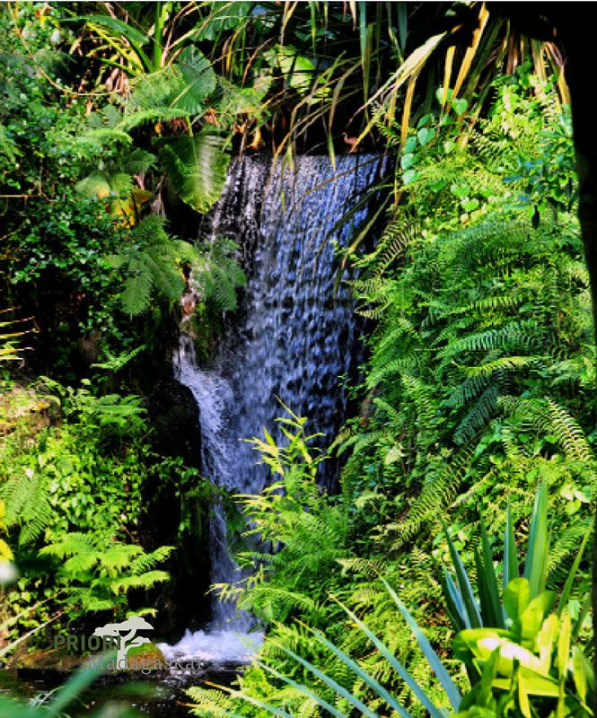

Die Masoala-Halbinsel im Nordosten von Madagaskar umfasst mit 4200 km2 fast 10% der Landesfläche der Schweiz. Sie wird zu Dreiviertel vom Meer umgeben und von zehn grösseren Flüssen entwässert, die zumeist in West-Ost-Richtung verlaufen.
 Die ganzjährig feuchtheisse Zone kennt zwischen Januar und März am meisten Regenfälle und interessanterweise fallen in der Innenbucht, also im Westteil des Masoala, mehr Regen als entlang der Ostseite. Somit gehört das Städtchen Maroantsetra, das am Ende der Innenbucht sitzt, zur regenreichsten Zone von ganz Madagaskar. Jahreswerte von 6 Metern Regen wurden gemessen. Obwohl es im Masoala quasi jeden Tag und das ganze Jahr hindurch regnet, fallen zwischen September und November am wenigsten Regen. Das wirkt sich sofort auf die Wassermenge der mit keinen 100 km kurzen Flüsse aus.
Die ganzjährig feuchtheisse Zone kennt zwischen Januar und März am meisten Regenfälle und interessanterweise fallen in der Innenbucht, also im Westteil des Masoala, mehr Regen als entlang der Ostseite. Somit gehört das Städtchen Maroantsetra, das am Ende der Innenbucht sitzt, zur regenreichsten Zone von ganz Madagaskar. Jahreswerte von 6 Metern Regen wurden gemessen. Obwohl es im Masoala quasi jeden Tag und das ganze Jahr hindurch regnet, fallen zwischen September und November am wenigsten Regen. Das wirkt sich sofort auf die Wassermenge der mit keinen 100 km kurzen Flüsse aus.
Die Masoala-Halbinsel wird rund zur Hälfte vom Masoala-Nationalpark bedeckt, dessen Durch-querung nur entlang festgelegter Wege erlaubt ist. Eine Durchquerung auf selbstgewählter Route ist weder erlaubt, noch leicht durchführbar. Jeder Besuch im Masoala-Nationalpark muss von einem lizenzierten Lokalführer begleitet werden. Der Park wird verwaltet von der Naturschutzbehörde von Madagaskar (Madagascar National Parcs).
Es ist abzuraten, im Februar den Masoala-Nationalpark zu durchwandern und dazu würde sich auch schwer ein Lokalguide finden lassen. Schlamm und Morast, hoher Wasserstand in den Flüssen und stehendes Wasser in Talebenen würden eine Wanderung zur Qual machen. Zudem besteht in diesen ersten Monaten des Jahre ein erhöhtes Risiko von Zyklonen.

In Tampolo an der Innenbucht des Masoala, dort wo der Urwald bis ans Meer reicht, bestehen ein paar Hotels, von denen aus man Tageswanderungen in den Wald hinein machen kann. Einige der Hotels / Lodges haben in den ersten Jahresmonaten zwar geschlossen, aber ein, zwei bleiben offen, obwohl kaum Besucher da sind. Die einzig sinnvolle Möglichkeit, im Februar den Masoala-Naturpark in Madagaskar zu erleben, ist, sich in Tampolo einzuquartieren und mit Tageswanderungen den Dichtwald erleben.Masoala zu besuchen ohne dabei ein Flugzeug zu benutzen, ist machbar, braucht aber Zeit. Der Schiffsverkehr ist sehr unzuverlässig und der Landweg ‘Camel-Trophy‘-artig. Beide Anfahrten und Wegfahrten sind möglich, aber man sollte somit mindestens zwei Wochen einplanen. Es gibt auch einfachere Unterkünfte in der Region.